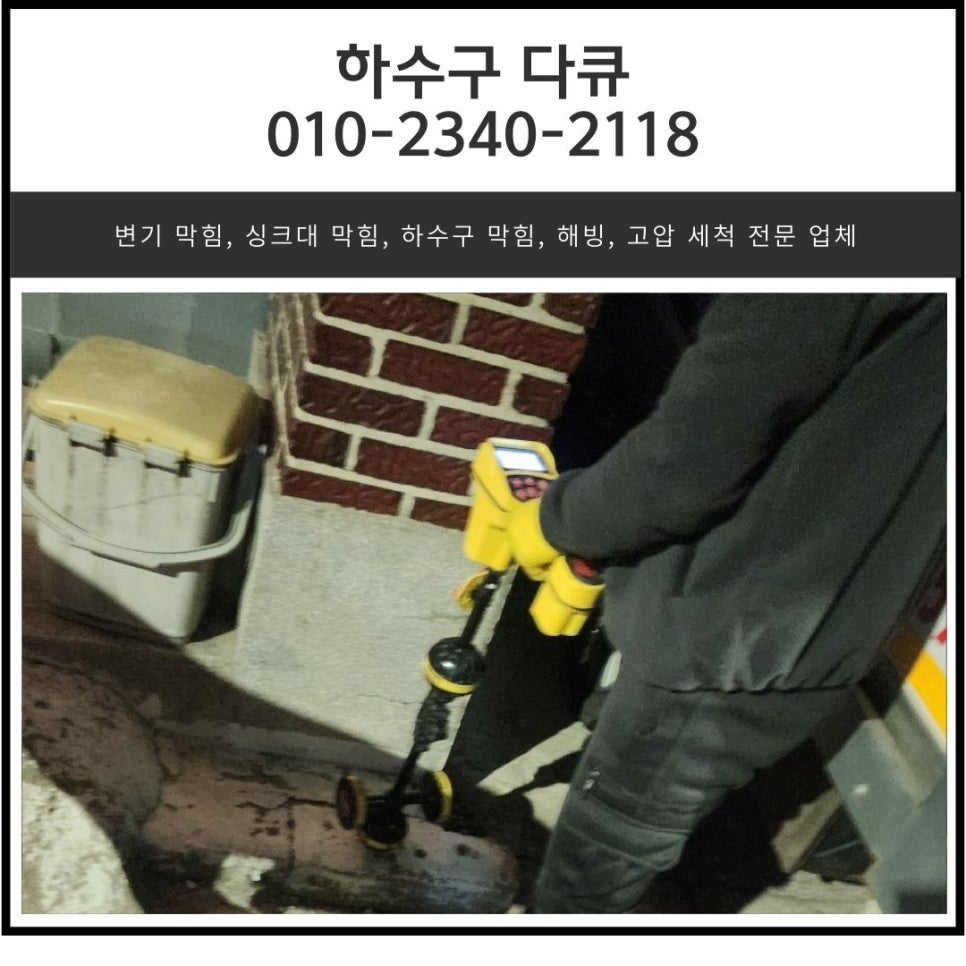
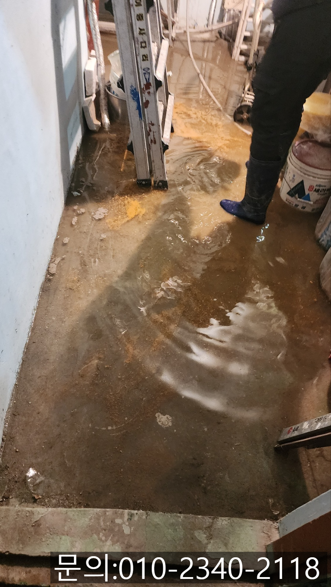
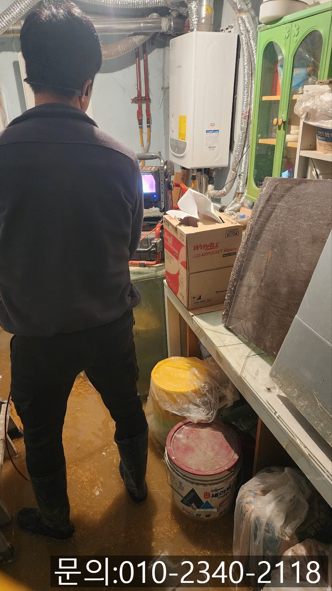
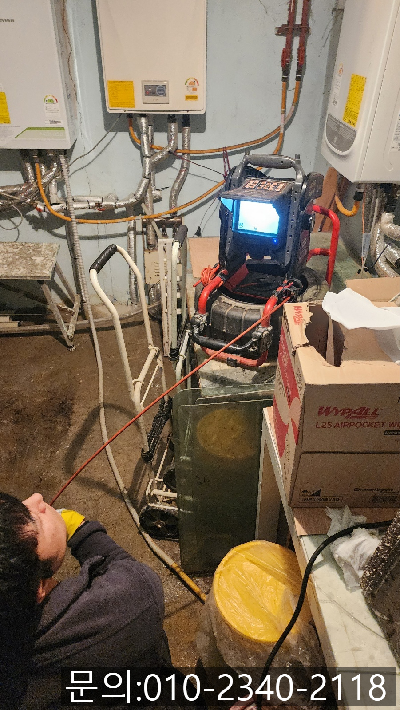
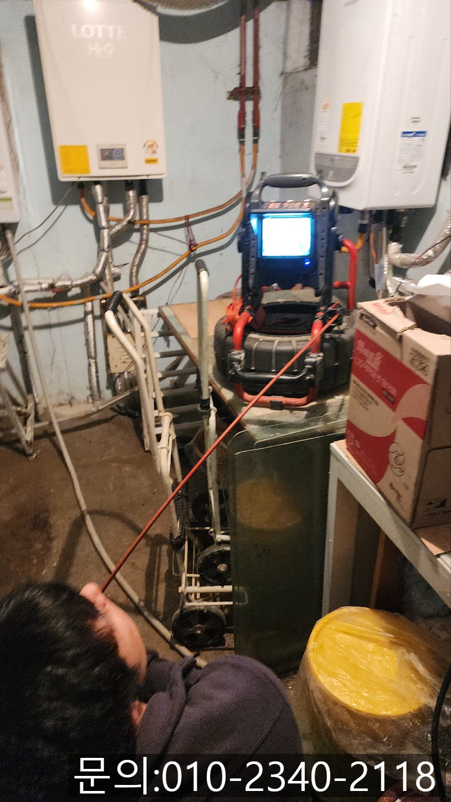
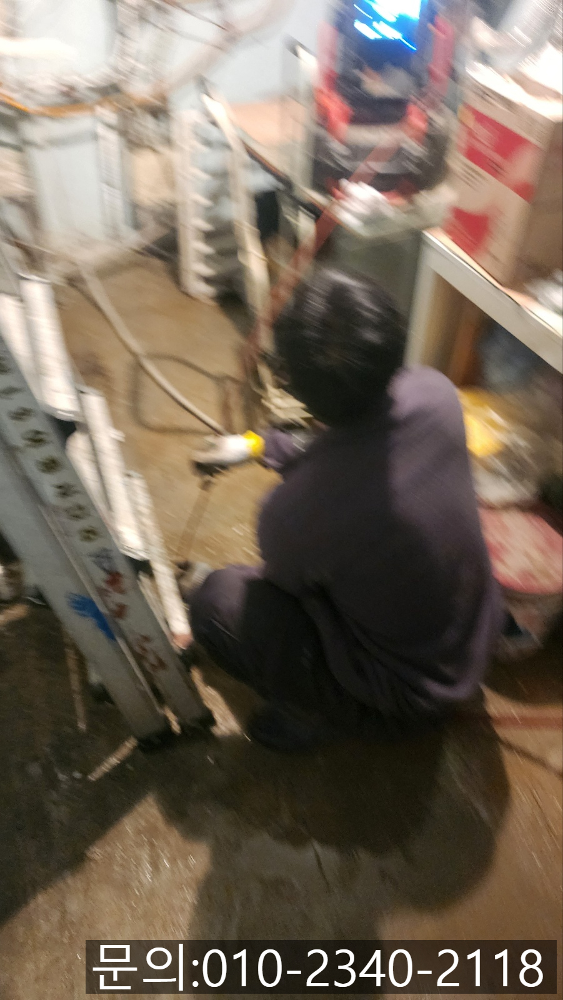
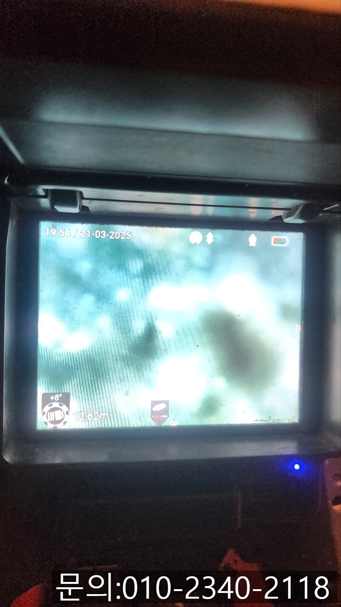

🏠 정남면 보일러실 하수구 역류 화성 방교동 하수도 배관 막힘 뚫는 업체
화성 정남면 싱크대막힘 전문 시공 후기

📋 작업 개요
- 위치: 화성 정남면, 정남면, 화성
- 서비스 유형: 싱크대막힘, 변기막힘, 하수구막힘, 배관막힘, 역류해결, 뚫는업체, 배관청소, 고압세척
- 작업 일시: 2025. 4. 3. 19:28
- 업체명: 하수구수사대 (010-5615-2118)
🔍 문제 상황
안녕하세요.
정남면 보일러실 하수구 역류, 화성 방교동 하수도 배관 막힘 뚫는 업체 하수구 다큐입니다.
대부분 가정에서 정남면 보일러실 하수구 역류가 발생하는 곳은 화장실의 변기나 주방의 싱크대, 세탁실 등을 생각하실 텐데요.
오늘 소개해 드릴 현장은 주택 지하에 위치한 보일러실 배수구가 역류했던 현장입니다.
보일러실이 따로 분리되어 있는 집도 있나? 하고 의아해하시는 분들도 계실 텐데요.
지어진지 오래된 몇몇 건물의 경우 안전과 효율성의 문제로 보일러실을 따로 분리해서 지어졌습니다.

🔎 원인 분석
💡 전문가 진단: 정밀 진단 장비를 사용하여 슬러지의 고착 여부를 판명하고 타격/세척 작업을 실시했습니다.
아무래도 가정과 분리되어 있는 보일러실에서 하수구 막힘이 발생해도 알아채기 쉽지 않을 텐데요.
연락 주신 고객님은 지하에서 악취가 나는 것 같아 이상함을 느끼시고 우연히 보일러실을 가보셨다가 깜짝 놀라 연락을 주셨어요.
정남면 보일러실 하수구 역류로 연락을 받고 도착한 현장 사진입니다.
사진으로도 확인되는 것처럼 바닥에 물이 역류해 고여있는 상태였어요.
각종 잡동사니 짐들로 인해 비좁은 보일러실이지만 상황이 심각하다 보니 신속하게 장비를 세팅하고, 정확한 원인을 확인해 보기 위해 배관 깊숙한 곳까지 내시경 카메라를 진입 시켜 확인해 보기로 했어요.
하지만 바닥에 많은 양의 물과 이물질이 고여있는 상태이다 보니 내시경 검수에 앞서 석션을 사용해 이물질을 제거하는 작업을 먼저 진행했습니다.
바닥에 있던 물을 모두 제거하고 내시경 카메라를 투입해 배관의 내부를 확인해 봤는데요.

🔧 작업 과정
예상했던 대로 배관 내부에는 기름때, 머리카락, 흙, 먼지 등이 덩어리를 이루어 배관을 꽉 막고 있는 상태였고, 단단한 기름 슬러지도 자리를 잡고 있는 모습이었습니다.
특히, 보일러실의 특성상 난방 배관의 배수 라인과 빗물 배수 라인까지 이어져 먼지, 흙 등이 쌓여 있는 상태였어요.
화성 방교동 하수도 배관 막힘 뚫는 업체 하수구 다큐는 고객님께 배관 내부의 상황을 설명해 드렸습니다.
보일러실 배관 막힘을 처음 겪는 고객님이시다 보니 막히게 된 이유와 배관 청소하는 방법, 발생되는 비용, 소요 시간 등 자세하게 안내해 드렸습니다.
한참 동안 설명을 들으시던 고객님께서는 배관 청소하는 다양한 방법 중에 고압세척을 해달라고 요청하셨어요.
거주하시면서 배관 청소를 한 번도 한 적이 없으시다며, 이왕 역류로 인해 청소하게 된 거 오랫동안 신경 쓰기 싫으시다고 배관에 쌓인 이물질을 모두 제거해달라고 하셨습니다.
고압세척 장비는 강력한 물줄기를 이용해 배관에 쌓인 이물질을 제거하는 장비로, 현존하는 배관 청소 장비 중 가장 강력한 힘을 이용해 넓고, 긴 배관에 쌓인 무거운 이물질도 제거해 줍니다.
하수구 다큐의 차량에 설치되어 있는 물탱크에 물을 모아준 다음 짧은 시간 동안 많은 양의 물을 쏟아내 배관에 쌓인 이물질을 밀어내는 작업을 진행했어요.
내시경 카메라로 꼼꼼하게 점검하며 진행하자 흙, 모래처럼 무거운 이물질들도 씻겨나가기 시작합니다.
한참을 반복해서 작업하자 점점 깨끗해지는 배관을 확인할 수 있었어요.


✅ 작업 완료
모든 작업을 마친 다음 내시경 카메라로 배관을 꼼꼼하게 점검하면서 잔여 이물질은 없는지 다시 한번 체크해 봤습니다.
남아있는 이물질 없이 깨끗하게 청소된 배관을 고객님과 함께 확인하고 통수 테스트까지 마친 다음 아무런 문제가 없는 것을 확인하고 작업을 마무리할 수 있었어요.
경기도 화성시 향남읍 상신하길로328번길 26 5층 505호 5호




⚠️ 주방 싱크대 배관 막힘 예방 수칙
- ✅ 기름기가 묻은 식기나 프라이팬은 설거지 전 키친타올로 반드시 기름때를 닦아내세요.
- ✅ 주기적으로 싱크대 개수대에 뜨거운 물을 가득 받아 한 번에 내려 배관 내부 기름을 씻어내세요.
- ✅ 배수구 거름망을 미세한 필터로 사용하시고 음식물 찌꺼기가 틈으로 새어 들지 않게 관리하세요.
- ✅ 베이킹소다와 식초를 뜨거운 물과 함께 일주일에 한 번씩 부어주면 배관 살균과 막힘 예방에 좋습니다.
💡 핵심 정리
- 확실한 장비 작업(내시경 점검 및 샤프트 스케일링)으로 원인을 뿌리 뽑습니다.
- 작업 후 1년 이내에 동일한 부위 재발 시 100% 무상 A/S 서비스를 보장합니다.
- 서울 · 경기 · 인천 전 지역에 24시간 언제든 긴급 출동할 수 있도록 항시 대기 중입니다.
❓ 자주 묻는 질문 (FAQ)
🚨 화성 정남면 싱크대막힘 문제로 고민이신가요?
정확한 원인 진단과 확실한 시공으로 재발 없는 해결을 약속드립니다.
24시간 긴급 출동 | 서울 · 경기 · 인천 전지역 | 1년 내 재발 시 무상 A/S